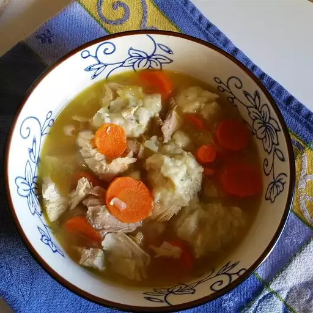

Chicken and Dumplings

Description
Chicken and dumplings recipe from my Hungarian father's side.
Ingredients
- 2 ¼ cups biscuit baking mix
- ⅔ cup milk
- 2 (14 ounce) cans chicken broth
- 2 (10 ounce) cans chunk chicken, drained
Steps
- Stir together biscuit mix and milk in a medium bowl until dough comes together; set aside.
- Pour cans of chicken broth into a saucepan along with chicken; bring to a boil.
- Take a handful of biscuit dough and flatten it in your hand. Tear off 1- to 2-inch pieces and drop them into boiling broth. Make sure they are fully immersed, at least for a moment. Repeat this step with remaining biscuit dough, then carefully stir soup, so dumplings are covered by broth.
- Cover and simmer, stirring occasionally, over medium heat until dumplings are cooked through, about 10 minutes.